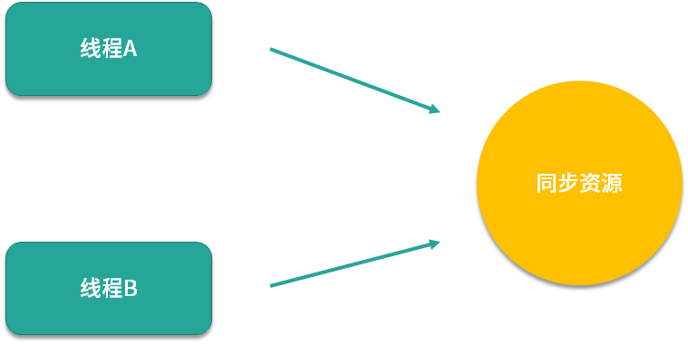
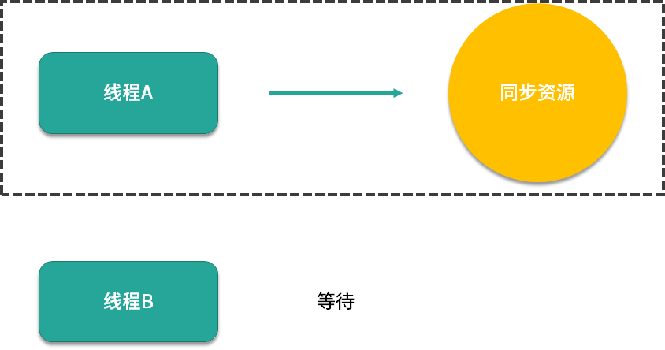
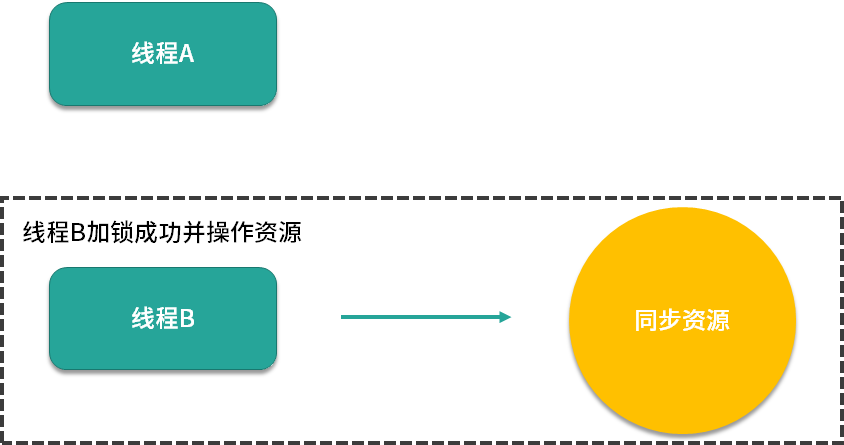
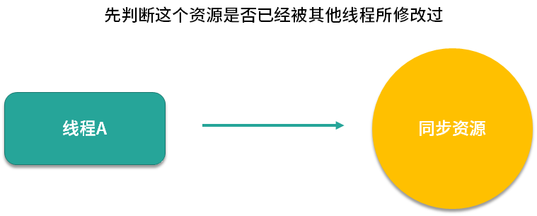
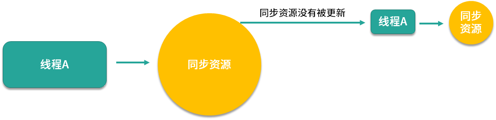
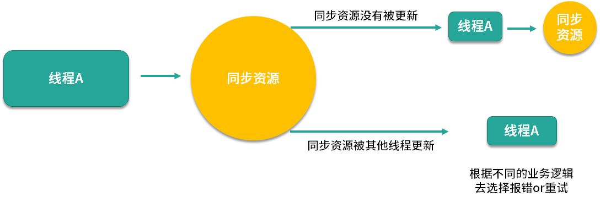

- 00 由点及面，搭建你的 Java 并发知识网.md.html
- 01 为何说只有 1 种实现线程的方法？.md.html
- 02 如何正确停止线程？为什么 volatile 标记位的停止方法是错误的？.md.html
- 03 线程是如何在 6 种状态之间转换的？.md.html
- 04 waitnotifynotifyAll 方法的使用注意事项？.md.html
- 05 有哪几种实现生产者消费者模式的方法？.md.html
- 06 一共有哪 3 类线程安全问题？.md.html
- 07 哪些场景需要额外注意线程安全问题？.md.html
- 08 为什么多线程会带来性能问题？.md.html
- 09 使用线程池比手动创建线程好在哪里？.md.html
- 10 线程池的各个参数的含义？.md.html
- 11 线程池有哪 4 种拒绝策略？.md.html
- 12 有哪 6 种常见的线程池？什么是 Java8 的 ForkJoinPool？.md.html
- 13 线程池常用的阻塞队列有哪些？.md.html
- 14 为什么不应该自动创建线程池？.md.html
- 15 合适的线程数量是多少？CPU 核心数和线程数的关系？.md.html
- 16 如何根据实际需要，定制自己的线程池？.md.html
- 17 如何正确关闭线程池？shutdown 和 shutdownNow 的区别？.md.html
- 18 线程池实现“线程复用”的原理？.md.html
- 19 你知道哪几种锁？分别有什么特点？.md.html
- 20 悲观锁和乐观锁的本质是什么？.md.html
- 21 如何看到 synchronized 背后的“monitor 锁”？.md.html
- 22 synchronized 和 Lock 孰优孰劣，如何选择？.md.html
- 23 Lock 有哪几个常用方法？分别有什么用？.md.html
- 24 讲一讲公平锁和非公平锁，为什么要“非公平”？.md.html
- 25 读写锁 ReadWriteLock 获取锁有哪些规则？.md.html
- 26 读锁应该插队吗？什么是读写锁的升降级？.md.html
- 27 什么是自旋锁？自旋的好处和后果是什么呢？.md.html
- 28 JVM 对锁进行了哪些优化？.md.html
- 29 HashMap 为什么是线程不安全的？.md.html
- 30 ConcurrentHashMap 在 Java7 和 8 有何不同？.md.html
- 31 为什么 Map 桶中超过 8 个才转为红黑树？.md.html
- 32 同样是线程安全，ConcurrentHashMap 和 Hashtable 的区别.md.html
- 33 CopyOnWriteArrayList 有什么特点？.md.html
- 34 什么是阻塞队列？.md.html
- 35 阻塞队列包含哪些常用的方法？add、offer、put 等方法的区别？.md.html
- 36 有哪几种常见的阻塞队列？.md.html
- 37 阻塞和非阻塞队列的并发安全原理是什么？.md.html
- 38 如何选择适合自己的阻塞队列？.md.html
- 39 原子类是如何利用 CAS 保证线程安全的？.md.html
- 40 AtomicInteger 在高并发下性能不好，如何解决？为什么？.md.html
- 41 原子类和 volatile 有什么异同？.md.html
- 42 AtomicInteger 和 synchronized 的异同点？.md.html
- 43 Java 8 中 Adder 和 Accumulator 有什么区别？.md.html
- 44 ThreadLocal 适合用在哪些实际生产的场景中？.md.html
- 45 ThreadLocal 是用来解决共享资源的多线程访问的问题吗？.md.html
- 46 多个 ThreadLocal 在 Thread 中的 threadlocals 里是怎么存储的？.md.html
- 47 内存泄漏——为何每次用完 ThreadLocal 都要调用 remove()？.md.html
- 48 Callable 和 Runnable 的不同？.md.html
- 49 Future 的主要功能是什么？.md.html
- 50 使用 Future 有哪些注意点？Future 产生新的线程了吗？.md.html
- 51 如何利用 CompletableFuture 实现“旅游平台”问题？.md.html
- 52 信号量能被 FixedThreadPool 替代吗？.md.html
- 53 CountDownLatch 是如何安排线程执行顺序的？.md.html
- 54 CyclicBarrier 和 CountdownLatch 有什么异同？.md.html
- 55 Condition、object.wait() 和 notify() 的关系？.md.html
- 56 讲一讲什么是 Java 内存模型？.md.html
- 57 什么是指令重排序？为什么要重排序？.md.html
- 58 Java 中的原子操作有哪些注意事项？.md.html
- 59 什么是“内存可见性”问题？.md.html
- 60 主内存和工作内存的关系？.md.html
- 61 什么是 happens-before 规则？.md.html
- 62 volatile 的作用是什么？与 synchronized 有什么异同？.md.html
- 63 单例模式的双重检查锁模式为什么必须加 volatile？.md.html
- 64 你知道什么是 CAS 吗？.md.html
- 65 CAS 和乐观锁的关系，什么时候会用到 CAS？.md.html
- 66 CAS 有什么缺点？.md.html
- 67 如何写一个必然死锁的例子？.md.html
- 68 发生死锁必须满足哪 4 个条件？.md.html
- 69 如何用命令行和代码定位死锁？.md.html
- 70 有哪些解决死锁问题的策略？.md.html
- 71 讲一讲经典的哲学家就餐问题.md.html
- 72 final 的三种用法是什么？.md.html
- 73 为什么加了 final 却依然无法拥有“不变性”？.md.html
- 74 为什么 String 被设计为是不可变的？.md.html
- 75 为什么需要 AQS？AQS 的作用和重要性是什么？.md.html
- 76 AQS 的内部原理是什么样的？.md.html
- 77 AQS 在 CountDownLatch 等类中的应用原理是什么？.md.html
- 78 一份独家的 Java 并发工具图谱.md.html
20 悲观锁和乐观锁的本质是什么？
本课时我们会讲讲悲观锁和乐观锁。
首先我们看下悲观锁与乐观锁是如何进行分类的，悲观锁和乐观锁是从是否锁住资源的角度进行分类的。
悲观锁
悲观锁比较悲观，它认为如果不锁住这个资源，别的线程就会来争抢，就会造成数据结果错误，所以悲观锁为了确保结果的正确性，会在每次获取并修改数据时，都把数据锁住，让其他线程无法访问该数据，这样就可以确保数据内容万无一失。
这也和我们人类中悲观主义者的性格是一样的，悲观主义者做事情之前总是担惊受怕，所以会严防死守，保证别人不能来碰我的东西，这就是悲观锁名字的含义。

我们举个例子，假设线程 A 和 B 使用的都是悲观锁，所以它们在尝试获取同步资源时，必须要先拿到锁。

假设线程 A 拿到了锁，并且正在操作同步资源，那么此时线程 B 就必须进行等待。

而当线程 A 执行完毕后，CPU 才会唤醒正在等待这把锁的线程 B 再次尝试获取锁。

如果线程 B 现在获取到了锁，才可以对同步资源进行自己的操作。这就是悲观锁的操作流程。
乐观锁
乐观锁比较乐观，认为自己在操作资源的时候不会有其他线程来干扰，所以并不会锁住被操作对象，不会不让别的线程来接触它，同时，为了确保数据正确性，在更新之前，会去对比在我修改数据期间，数据有没有被其他线程修改过：如果没被修改过，就说明真的只有我自己在操作，那我就可以正常的修改数据；如果发现数据和我一开始拿到的不一样了，说明其他线程在这段时间内修改过数据，那说明我迟了一步，所以我会放弃这次修改，并选择报错、重试等策略。
这和我们生活中乐天派的人的性格是一样的，乐观的人并不会担忧还没有发生的事情，相反，他会认为未来是美好的，所以他在修改数据之前，并不会把数据给锁住。当然，乐天派也不会盲目行动，如果他发现事情和他预想的不一样，也会有相应的处理办法，他不会坐以待毙，这就是乐观锁的思想。

乐观锁的实现一般都是利用 CAS 算法实现的。我们举个例子，假设线程 A 此时运用的是乐观锁。那么它去操作同步资源的时候，不需要提前获取到锁，而是可以直接去读取同步资源，并且在自己的线程内进行计算。

当它计算完毕之后、准备更新同步资源之前，会先判断这个资源是否已经被其他线程所修改过。

如果这个时候同步资源没有被其他线程修改更新，也就是说此时的数据和线程 A 最开始拿到的数据是一致的话，那么此时线程 A 就会去更新同步资源，完成修改的过程。

而假设此时的同步资源已经被其他线程修改更新了，线程 A 会发现此时的数据已经和最开始拿到的数据不一致了，那么线程 A 不会继续修改该数据，而是会根据不同的业务逻辑去选择报错或者重试。
悲观锁和乐观锁概念并不是 Java 中独有的，这是一种广义的思想，这种思想可以应用于其他领域，比如说在数据库中，同样也有对悲观锁和乐观锁的应用。
典型案例
- 悲观锁：synchronized 关键字和 Lock 接口
Java 中悲观锁的实现包括 synchronized 关键字和 Lock 相关类等，我们以 Lock 接口为例，例如 Lock 的实现类 ReentrantLock，类中的 lock() 等方法就是执行加锁，而 unlock() 方法是执行解锁。处理资源之前必须要先加锁并拿到锁，等到处理完了之后再解开锁，这就是非常典型的悲观锁思想。
- 乐观锁：原子类
乐观锁的典型案例就是原子类，例如 AtomicInteger 在更新数据时，就使用了乐观锁的思想，多个线程可以同时操作同一个原子变量。
- 大喜大悲：数据库
数据库中同时拥有悲观锁和乐观锁的思想。例如，我们如果在 MySQL 选择 select for update 语句，那就是悲观锁，在提交之前不允许第三方来修改该数据，这当然会造成一定的性能损耗，在高并发的情况下是不可取的。
相反，我们可以利用一个版本 version 字段在数据库中实现乐观锁。在获取及修改数据时都不需要加锁，但是我们在获取完数据并计算完毕，准备更新数据时，会检查版本号和获取数据时的版本号是否一致，如果一致就直接更新，如果不一致，说明计算期间已经有其他线程修改过这个数据了，那我就可以选择重新获取数据，重新计算，然后再次尝试更新数据。
SQL语句示例如下（假设取出数据的时候 version 为1）：
UPDATE student
SET
name = ‘小李’,
version= 2
WHERE id= 100
AND version= 1
“汝之蜜糖,彼之砒霜”
有一种说法认为，悲观锁由于它的操作比较重量级，不能多个线程并行执行，而且还会有上下文切换等动作，所以悲观锁的性能不如乐观锁好，应该尽量避免用悲观锁，这种说法是不正确的。
因为虽然悲观锁确实会让得不到锁的线程阻塞，但是这种开销是固定的。悲观锁的原始开销确实要高于乐观锁，但是特点是一劳永逸，就算一直拿不到锁，也不会对开销造成额外的影响。
反观乐观锁虽然一开始的开销比悲观锁小，但是如果一直拿不到锁，或者并发量大，竞争激烈，导致不停重试，那么消耗的资源也会越来越多，甚至开销会超过悲观锁。
所以，同样是悲观锁，在不同的场景下，效果可能完全不同，可能在今天的这种场景下是好的选择，在明天的另外的场景下就是坏的选择，这恰恰是“汝之蜜糖，彼之砒霜”。
因此，我们就来看一下两种锁各自的使用场景，把合适的锁用到合适的场景中去，把合理的资源分配到合理的地方去。
两种锁各自的使用场景
悲观锁适合用于并发写入多、临界区代码复杂、竞争激烈等场景，这种场景下悲观锁可以避免大量的无用的反复尝试等消耗。
乐观锁适用于大部分是读取，少部分是修改的场景，也适合虽然读写都很多，但是并发并不激烈的场景。在这些场景下，乐观锁不加锁的特点能让性能大幅提高。